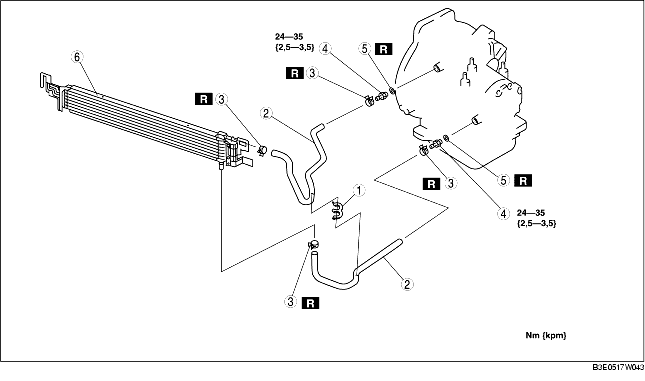

1. Demontera batterikåpan. (Se DEMONTERING/MONTERING AV BATTERI [ZJ, Z6].)
2. Lossa batteriets minuskabel.
3. Demontera kylargrillen. (4SD)
4. Ta bort den undre kåpan.
5. Tappa ur växellådsoljan i ett lämpligt kärl. (Se BYTE AV AUTOMATVÄXELÅDSSOLJAN (ATF).)
6. Demontera kylarfästet.
7. Demontera kylfläkten. (Se Observera vid montering av kylfläkten.)
8. Demontera kylarens monteringsgummi. (Se Observera vid demontering av kylare.)
9. Demontera i den ordning som anges i tabellen.
10. Montera i omvänd ordning mot demonteringen.
11. Fyll på växellådsolja till rätt nivå. (Se BYTE AV AUTOMATVÄXELÅDSSOLJAN (ATF).)
12. Kontrollera om det finns oljeläckage från oljeledningar och oljeslangar.
13. Kontrollera om det läcker kylvätska från slangarna.
14. Kontrollera växellådsoljans nivå och skick. (Se KONTROLL AV AUTOMATVÄXELLÅDSOLJAN (ATF).)
15. Gör ett tryckprov på ledningarna. (Se TEST AV MEKANISKA SYSTEM.)
16. Provkör bilen. (Se PROVKÖRNING.)

.
1. Automatväxellådans oljekylare måste alltid sköljas ur om växellådan demonteras för översyn, eftersom den kvarvarande oljan kan vara förorenad. Ursköljningen förhindrar att också den nya oljan förorenas.
2. Följ anvisningarna i tillverkarens bruksanvisning vid ursköljningen.
3. Montera oljekylaren i kylarens fästen.
1. Lägg på tryckluft genom öppningen mot kylaren och blås ut allt kvarvarande skräp och slagg från kylarledningarna. Låt tryckluften vara på max en minut.
2. Rikta in märkena och för oljeslangen på oljeröret tills den sitter som den ska, se bilden.
3. Montera den nya slangklämman på slangen.
4. Se till att slangklämman inte kommer i kontakt med någon annan komponent.